Introduction to Microsoft SQL Server Data Services
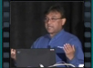
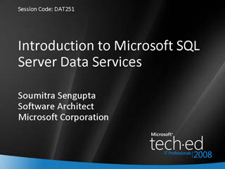
Speaker(s): Soumitra Sengupta
How Microsoft SQL Server Helps You to Lower Your Cost of Storage
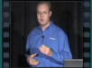
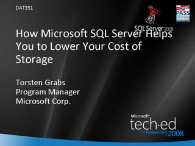
Speaker(s): Torsten Grabs
Advanced Microsoft SQL Server PowerShell Tips and Tricks
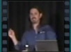
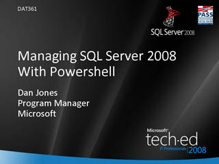
Speaker(s): Dan Jones
Introduction to Microsoft Dynamics CRM
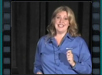
 Speaker(s): Susan Sauls
Speaker(s): Susan Sauls
Deploying Microsoft Dynamics CRM
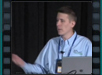
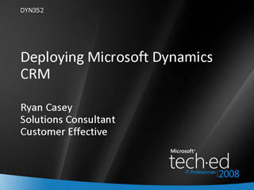
Speaker(s): Ryan Casey
Technical Introduction to Microsoft System Center Data Protection Manager 2007
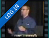
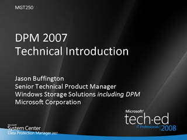
Speaker(s): Jason Buffington
Microsoft System Center Service Manager
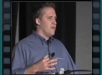
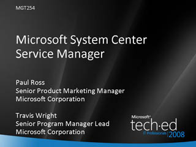
Speaker(s): Paul Ross,Travis Wright
A Hackers Diary: How I Can Hack Your Vulnerable Services and How You Can Stop Me
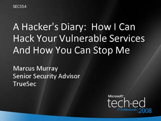
Speaker(s): Marcus Murray
The Spy Who Hacked Me!
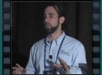
Speaker(s): Alex Smolen, Rudolph Araujo
Virtualization and Security: What Does It Mean for Me?
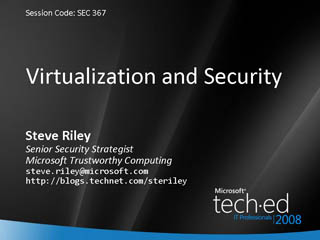
Speaker(s): Steve Riley
Introduction to Microsoft Forefront Code Name "Stirling"
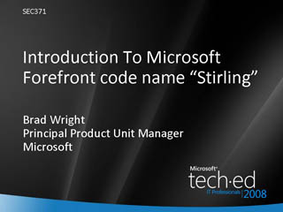
Speaker(s): Brad Wright
Windows Security Boundaries
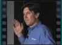
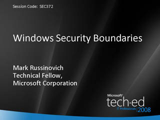
Speaker(s): Mark Russinovich
How to Build Your Next Generation IT Infrastructure Using Windows Server 2008
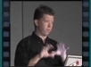
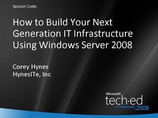
Speaker(s): Corey Hynes
Windows Logins Revealed
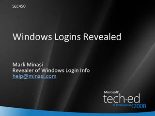
Speaker(s): Mark Minasi
Windows, PowerShell, and Windows Management Instrumentation: Unveiling Microsoft's Best Kept Secret
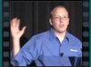
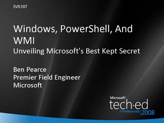
Speaker(s): Ben Pearce
Microsoft System Center Virtual Machine Manager 2008: Overview
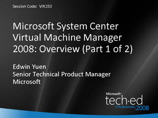
Speaker(s): Edwin Yuen
Windows Server 2008 Hyper-V: Scripting and Programmatic Management for Fun and Profit (VBS and PowerShell)
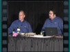
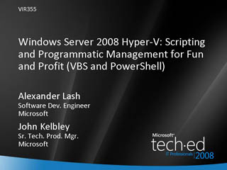
Speaker(s): Alexander Lash, John Kelbley
Deploying Windows Server 2008 Hyper-V and Microsoft System Center Virtual Machine Manager: Best Practices
 Speaker(s): Allen Stewart, Edwin Yuen
Speaker(s): Allen Stewart, Edwin Yuen
Windows Server 2008 Hyper-V Architecture, Scenarios, and Networking
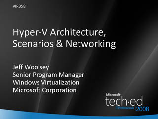
Speaker(s): Jeff Woolsey, Mike Sterling